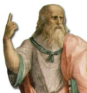

Eflatun (Platon) (m.ö. 427-347)

Filozoflarýn önemli bir kýsmý inkar bataðýna saplanýrken, kurtulabilen yüzde birlik dilimin içinde yer alan ve Risale-i Nur'da ehl-i necat olarak geçen Eflatun, soylu bir ailenin çocuðu olarak dünyaya geldi. M.Ö. 427 yýlýnda Atina'da doðdu. Asýl adý Platon olmasýna raðmen Ýslam dünyasýnda Eflatun olarak tanýndý. Ýyi bir eðitimden geçen Eflatun, Matematik, þiir ve sporda baþarýlýydý. Bu özelliklerinin yanýnda, olimpiyatlarda birinci olacak kadar da baþarýlý bir atletti.Sokrates'in en ünlü talebesi olup, hocasýnýn ölümüne kadar derslerini takip etti. Hocasýnýn ölümünden (M.Ö. 399) sonra çeþitli ülkeleri dolaþmaya baþladý. Mýsýr, Ýtalya, Anadolu ve Hindistan'a gittiði tahmin edilmektedir. Gittiði ülkelerde karþýlaþtýðý ilim adamlarýndan istifade etmeye çalýþtý. Tahminen on iki yýl sonra Atina'ya dönünce, Akademia isimli okulunu kurdu (387).
Günümüzden 23-24 asýr evvel yaþamýþ olmasýna raðmen eserleri ve fikirleri günümüze kadar ulaþan ender ilim adamlarýndan biridir. Engin bilgi ve birikimi Risale-i Nur'da emsal olarak kullanýlmýþtýr. (Emirdað Lahikasý, 137; Muhakemat, 108; Lemalar, 390) Hocasý Sokrates de onun verdiði bilgiler sayesinde tanýnmýþtýr. Mevcut eserlerinin önemli bir kýsmý, hocasý ile aralarýnda geçen müzakereleri konu edinmektedir. Yazýlý eserlerinin yaný sýra sözlü olarak verdiði bir kýsým dersler de, Aristoteles'in kayda geçirmesi sayesinde günümüze kadar gelmiþtir.
Eflatun, ömrü boyunca Sokrates'i baþ tacý edip fikirlerini yaþatmaya ve sonraki nesillere aktarmaya çalýþmýþtýr. Bu arada ideal bir devletin nasýl kurulabileceðini düþündü. Eflatun ve hocasý arasýnda geçen konuþmalar ve verilen bilgiler üç kategoriden oluþmaktadýr. Birinci kýsýmda; Sokrates'in fikirleri, mücadelesi, mahkemede yargýlanmasý ve ölümünü konu edinmektedir. Ýkinci kýsýmda; Eflatun'un yetiþkinlik dönemi, eðitimi ilimde kat ettiði bilgileri bulmak mümkündür. Son kýsýmda ise daha çok, devlet yönetimi, kainat ile alakalý fikir ve düþünceler, dünyaya bakýþ vb. konular ele alýnmýþtýr. Tartýþmalý olmakla birlikte Eflatun'a ait olduðu iddia edilen mektuplar da vardýr.
Eflatun, bunalým ve kargaþanýn hakim olduðu bir dönemde yaþadý. Atina'da iktidar kavgalarý yüzünden kargaþa hakimdi. Ýç savaþlar yüzünden iktidar devrilmiþ ve ülkede bunalým hakim olmuþtu. Ýktidarý ele geçirenler halka ve ilim adamlarýna karþý çok sert davranýyorlardý. Bu arada Eflatun'un meþhur hocasý Sokrates yargýlanarak haksýz bir þekilde ölüm cezasýna çarptýrýlmýþtý. Kültürel ve manevi deðerlerde de büyük bir çöküntü görülmekteydi. Hakim zihniyet kendi düþüncesinde olmayanlara hayat hakký tanýmýyordu.
Eflatun, hocasýndan devraldýðý fikirleri, insanýn sahip olabileceði fikirlerle birlikte ele alýp gerçek yaþamýn sýrrýna ulaþmaya çalýþtý. Fikirleri dile getirerek, doðru olanýn bulunmasý ve aydýnlanmanýn saðlanmasý üzerinde kafa yordu. Fikirler saklý kaldýðý müddetçe hiçbir iþe yaramaz. Zaten insan ancak fikirleriyle varolabilirdi. Düþünceyi ön plana çýkararak, Batýnýn önemli ölçüde etkilendiði þahsiyetler arasýnda yer aldý. Tasarladýðý ve kurulmasýný hayat ettiði devletin kurulmasý için çeþitli teþebbüslerde bulundu. Bu meyanda, Ýtalya'yý istibdatla yöneten Kral Dionysios'a düþündüðü devleti kurmasýný teklif ettiyse de kabul görülmeyerek dýþarý atýldý.
Bediüzzaman, Eflatun'un varlýk hakkýndaki düþüncelerini eleþtirir. Eflatun, Aristo, Ýbn Sina, ve Farabi gibi zatlarýn, "Ýnsaniyetin gàyetü'l-gàyâtý, 'teþebbüh-ü bilvâcib'dir, yani Vâcibü'l-Vücuda benzemektir" diyerek hata yaptýklarýný belirtir. Ayrýca bu zatlarýn eþyaya hakiki bir malikiyet vermekle mesleklerini bu fasit daire içine bina ettiklerini belirtir. Onlar bu görüþleri ile, "enâniyeti kamçýlayýp, þirk derelerinde serbest koþturarak, esbâbperest, sanemperest, tabiatperest, nücumperest gibi çok enva-ý þirk tâifelerine meydan açmýþlar. Ýnsaniyetin esâsýnda münderiç olan acz ve zaaf, fakr ve ihtiyaç, naks ve kusur kapýlarýný kapayýp, ubûdiyetin yolunu seddetmiþler. Tabiata saplanýp, þirkten tamamen çýkamayýp, þükrün geniþ kapýsýný bulamamýþlar" (Sözler, s.498 ). Felsefe yolundan gidip ideale ulaþma fikrinde ve tabiatperest olanlar, gayelerine ulaþamadýklarý gibi saplantýlarýnda da boðulup kalmýþlar. Bunlardan çok azý, sadece yüzde biri dalalet bataðýndan kurtulabilmiþtir. Ýþte kurtulabilenlerden bir tanesi de Eflatun'dur. (Kastamonu Lahikasý, s. 124) Eflatun'un Ýnsanî deðerlere verdiði önem onun kurtuluþunu hazýrlamýþtýr.
Eflatun'a göre tek baþýna esenliðe ulaþýlamaz. Ancak, diðer insanlarla beraber kurulacak, adaletin hakim olduðu, idarecinin her türlü bilgi ile donanmýþ olduðu bir devlet bünyesi içinde ulaþýlabilir. Toplumda bilge kiþilere deðer verilmeli ve akýl egemen olmalýdýr. Güzel Site olarak vasýflandýrdýðý devletin teþekkül ettirilmesi hayaliyle ölümüne kadar çalýþtý. Hocasýndan aldýðý ve kendi fikirlerini de üzerine bina ederek meydana getirdiði "Devlet" adlý eserinde, yönetim ve idare mekanizmasý ile ilgili bilgileri diyaloglar halinde aktarmaktadýr.
Eserleri
Politeia (Devlet); Sabahattin Eyüboðlu ve Mehmet Ali Cimcoz tarafýndan, "Devlet" adý altýnta tercüme edilerek basýlmýþtýr. Apologia; Sokrates'in Müdafaasý, ismiyle Niyazi Berkes tarafýndan Türkçe'ye çevrilmiþtir. Euthyphron; Türkçe'ye tercüme edilmiþtir. Ýon; Ýhsan Bozkurt'un çevirisi ve MEB yayýný olarak basýlmýþtýr. Diðerleri; Kharmides, Kriton, Lakhes, Lysis (Dostluk), Protagoras, Euthydeemos, Gorgias (Küçük Diyaloglar). Bu eserlerin önemli bir kýsmý orijinal adlarýyla basýlarak Türkçe'ye tercüme edilmiþlerdir. Adý geçenlerin dýþýnda da bir çok eseri mevcuttur.